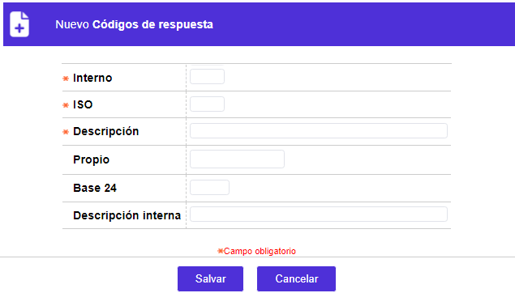

|
Códigos de respuesta |
Esta función se utiliza para definir los códigos de respuesta, que pueden ser asignados a las solicitudes de autorización que se originen al efectuarse una transacción con tarjeta de crédito (compras o avances en efectivo). El código de respuesta emitido por el centro de autorizaciones, será determinante en la aceptación o rechazo de una transacción, y dependerá directamente del estado actual de la tarjeta de crédito.
El formulario contiene las opciones Actualizar, Eliminar, y Adicionar. Adicionalmente, cuenta con un filtro de búsqueda.
Filtro: Se pueden realizar consultas a través de las siguientes opciones:
Adicionar: Si el usuario invoca la opción Adicionar se despliega un formulario con los siguientes campos:

|
Interno |
Campo alfanumérico de 2 posiciones, obligatorio, el cual corresponde al código único que identifica cada respuesta dentro del Sistema OpenCard. Estos códigos no son modificables puesto que los programas de autorizaciones están diseñados para funcionar bajo esta codificación, y cualquier alteración impedirá su normal funcionamiento. |
|
ISO |
En este campo alfanumérico de 2 posiciones, obligatorio, se registra el código del protocolo estándar universal ISO, dependiendo del equipo autorizador con quien se realice la operación. Los protocolos estándar ISO y BASE24 son universales y la entidad tiene oportunidad de escoger bajo cuál protocolo operar, de tal manera que es requerido que cualesquiera de los dos campos se encuentren diligenciados. |
|
Descripción |
Permite registrar el detalle o descripción de la respuesta asociada a cada uno de los códigos definidos. |
|
Propio |
Campo alfanumérico de 6 posiciones, no obligatorio, en el cual e registra el código asignado por la entidad para identificar cada respuesta. |
|
Base_24 |
En este campo alfanumérico de 3 posiciones, obligatorio, se registra el código del protocolo estándar universal BASE24, dependiendo del equipo autorizador con quien se realice la operación. Los protocolos estándar ISO y BASE24 son universales y la entidad tiene oportunidad de escoger bajo cuál protocolo operar, de tal manera que es requerido que cualesquiera de los dos campos se encuentren diligenciados. |
|
Descripción interna |
Campo alfanumérico de 30 posiciones, no obligatorio, en el que se registra el significado o implicación que tiene la codificación parametrizada. |
Actualizar: Si el usuario invoca la opción Actualizar se despliega un nuevo formulario en el cual los únicos campos modificables son: ISO, Descripción, Propio, Base 24, Descripción interna.